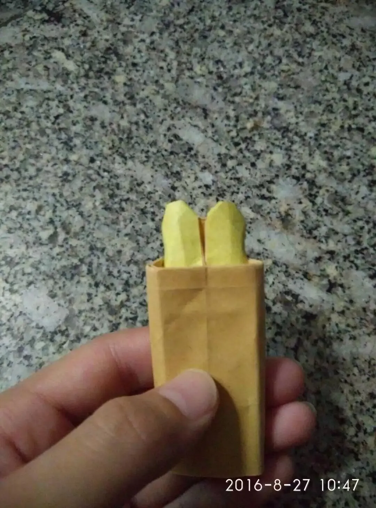

整理一些原创的折纸作品。
方块小人
六年级时折的，八等分，帽子可以折出不同形状。

恐龙 | 猎豹
在折纸吧看到一个简单分享22.5°设计经验的贴，思想是拼基本三角形，看完想做个恐龙练手，六个分支用四个三角形，很快就在正方形纸上拼出来，而且折出来了。可是纸张利用率很低，前肢很厚，但也正因此奇妙地达到了平衡而能够立住。然后看基本型的形状像只猎豹，于是往猎豹方向整形，也做出来了。成品看起来还过得去，不过确实是比较勉强的设计。


犀牛
用《最折纸》里介绍的“阿氏基本型”折的，忘记怎么折了，不过看样子很容易复现。


油条
某个早上心血来潮的产物，也是我唯一一个有了想法很快就折出来的作品。附上实拍过程。



大白
第一张图是初一的时候折的，第二张是大一的时候重新整形的版本，CP也是大一时重画的。


大猩猩
这个作品的时间跨度也挺大的，大致经历了三版：


关于第三版，本来是想在第一版的基础上做出双色效果，突然觉得头部那么多纸层不利用太浪费了，于是琢磨头部的整形，于是有了第三版，摸索的过程如下：


附上第三版的的整形过程：


发现除了改进的版本，这些都是在六年级到初一这段时间折的，那时真的很喜欢折纸。可是热情在初一下学期突然地消退了。也想过“折纸是一辈子的爱好”，原来人的兴趣爱好也会不断改变。不过现在偶尔看到可爱或有趣的作品还是会想要拿出纸来折，我宿舍的桌子上还装饰着几个折纸。这种状态也不错。